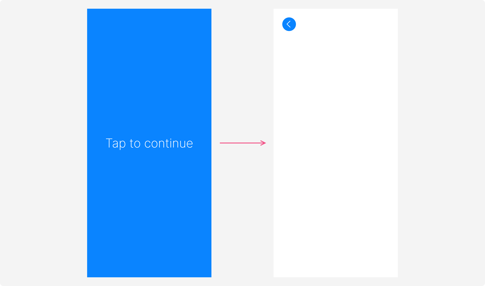
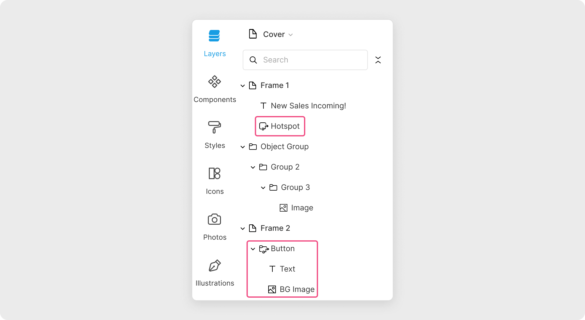
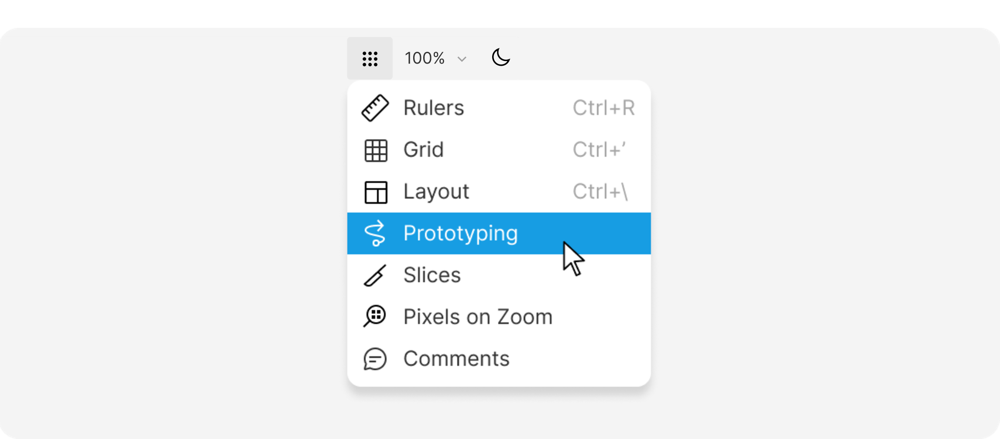
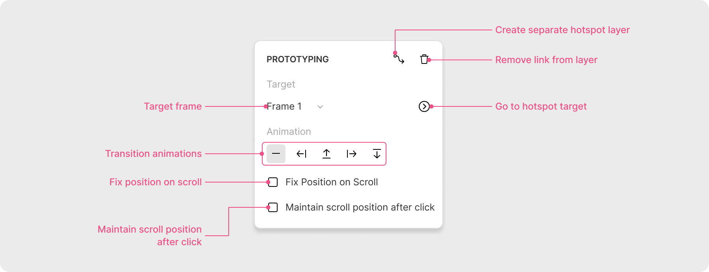

Learn how to create interactive prototypes in Lunacy
You can build prototypes to test and polish the UX of your designs before sending them over to development.
Prototyping is based on linking frames and creating interactive zones, or hotspots, on your designs so you can preview how your interface behaves based on user actions.
The easiest way to create a prototype is to add a link from one frame to another.
+ next to the Prototyping section. An arrow-shaped prototyping link will appear.To preview a prototype, select the frame you want to start with and
click the Play button (
You can link your frames in any sequence you need to test the user flow for your interfaces.
To comment on a prototype right from the browser, log in to your Lunacy account. The Log in button appears once you hover the cursor at the top of the prototype window to display the top bar.
To comment, click the Comment button on the top bar, leave a
comment, then click Shift + Enter to post it.
To create a scrollable prototype:
Preview the prototype as usual and scroll down to test out the interface.
Hotspots are another convenient way to link frames for prototyping. These are special types of layers that acts as an interactive zone anywhere on a frame.
Hotspots come in handy when the size of an element you want to make interactive or tappable is too small for comfortable use. By adding a hotspot, you can enlarge the interactive area around the layer.
You can also use hotspots as parts of components and override their targets as needed.
There are two ways to add a hotspot:
This is how hotspots and linked layers appear in the Layer list:
To hide/show hotspots and prototyping links on the canvas, enable/disable the Show prototyping option in the Additional options menu on the top bar:
To delete a hotspot, select it and press Del.
To see the prototype in action, you'll need to preview it.
Here are the settings that appear in the Prototyping section of the right panel when you select a layer linked to a frame or a hotspot:
Create separate hotspot layer. Click it to create a hotspot over the selected layer.
Remove link from layer. Deletes the prototyping setting for the selected layer or deletes the selected hotspot.
Target frame. Displays the current target frame of the selected layer/hotspot. Open it to change the target frame and view all of the frames available in the document. In multi-page documents, the frames in this list are organized by pages (you can link frames that are on different pages).
Go to hotspot target. Clicking this button redirects you to the frame set as the target frame for the selected layer.
Transition animations. Determine the type of animation for the transitions between frames in the prototype.
Fix the frame position on scroll. Enable this setting if you want the selected layer to preserve its position when you scroll the screen (for instance, a floating button).
Maintain scroll position after click. With this checkbox enabled, scrollable frames preserve their position during the prototype preview. When you get back to the frame, it will be in the same position you left it. With the checkbox cleared, the frame will always return to the top.